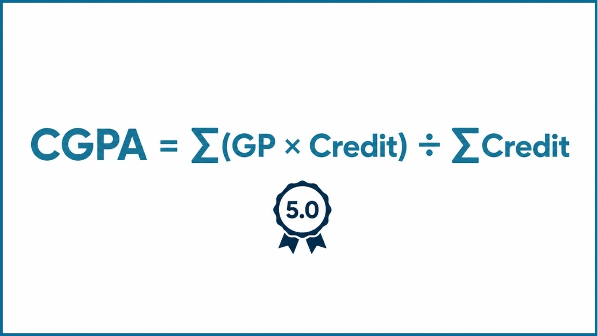

CGPA Calculator Nigeria (5.0 Scale)
CGPA Calculator
Target CGPA
SGPA → CGPA
What Is a Nigerian CGPA Calculator?
A Nigerian CGPA Calculator is an online academic tool that calculates your Cumulative Grade Point Average using the Nigerian 5.0 grading system. It combines your course grades, credit units, and grade points to produce an accurate CGPA. Students can use the calculator after every semester to monitor academic performance and estimate their final graduation classification.
What Is CGPA in Nigeria?
CGPA stands for Cumulative Grade Point Average. It measures your overall academic performance across every completed semester. Instead of showing how well you performed in one term, it combines your results throughout your academic program.
Your CGPA changes whenever new semester results become available. Strong grades increase your overall average, while poor grades reduce it. This makes CGPA one of the most important academic indicators throughout your university journey.
Many students confuse CGPA with GPA because both measure academic performance. However, they represent different calculations and serve different purposes. A GPA, or Grade Point Average, usually measures your performance during a single semester. A CGPA combines every semester GPA into one cumulative score. Universities often use CGPA when determining graduation eligibility, academic standing, scholarships, and degree classifications.
Understanding the Nigerian 5.0 Grading System
Most Nigerian universities calculate academic performance using a 5.0 grading scale. Under this system, every letter grade corresponds to a specific grade point. Your final CGPA depends on both the grade points you earn and the credit units assigned to each course.
| Letter Grade | Score (%) | Grade Point |
|---|---|---|
| A | 70–100 | 5.00 |
| B | 60–69 | 4.00 |
| C | 50–59 | 3.00 |
| D | 45–49 | 2.00 |
| E | 40–44 | 1.00 |
| F | Below 40 | 0.00 |
Always check your university handbook because individual grading boundaries may differ slightly. However, the 5-point grading structure remains widely adopted across many Nigerian institutions.
Nigerian CGPA Formula

The standard formula for calculating CGPA is:
Each course carries a specific number of credit units. Courses with higher credit units contribute more toward your final CGPA. Every completed course generates Quality Points using this formula:
For example: a course with 3 credit units where you earn an A (Grade Point: 5) gives you 15 quality points. The university adds quality points across all courses and divides by total credit units to arrive at your CGPA.
Manual CGPA Calculation Example
| Course | Credit Unit | Grade | Grade Point | Quality Point |
|---|---|---|---|---|
| GST 111 | 2 | A | 5 | 10 |
| MTH 111 | 3 | B | 4 | 12 |
| CSC 111 | 3 | A | 5 | 15 |
| PHY 111 | 2 | C | 3 | 6 |
| CHM 111 | 3 | B | 4 | 12 |
| Total | 13 | – | – | 55 |
CGPA = 55 ÷ 13 = 4.23
The same process applies regardless of your department or university. The only difference comes from the grades and credit units entered into the calculator.
Nigerian Degree Classification Based on CGPA
Many Nigerian universities classify undergraduate degrees according to a student's final CGPA. Although exact classifications may differ slightly between institutions, the following ranges are widely recognized.
| Degree Classification | Typical CGPA Range |
|---|---|
| First Class | 4.50 – 5.00 |
| Second Class Upper | 3.50 – 4.49 |
| Second Class Lower | 2.40 – 3.49 |
| Third Class | 1.50 – 2.39 |
| Pass | 1.00 – 1.49 |
Always refer to your university's academic handbook because classification policies may vary slightly. A high CGPA can improve your chances of securing scholarships, graduate jobs, postgraduate admissions, and competitive internship opportunities.
Nigerian Universities That Commonly Use the 5.0 CGPA Scale
The 5.0 grading system is widely adopted across federal, state, and private universities in Nigeria. Students from the following universities can generally use this calculator with confidence.
Benefits of Using This Nigerian CGPA Calculator
Instant Accurate Results
Calculates your CGPA within seconds using the Nigerian 5.0 grading system. No manual computation needed.
Target CGPA Planner
Set a target GPA and see exactly what grades you need in remaining credits to hit your academic goal.
Multi-Semester Support
Add unlimited semesters and courses. Each semester shows its own SGPA, and your overall CGPA reflects your complete academic record.
PDF Report Export
Download a professional academic report with all semesters, courses, and GPA breakdown: ideal for applications and admissions.
Built for Nigerian Universities
Pre-configured for the exact grading scale used across federal, state, and private universities in Nigeria.
Free and Mobile Friendly
Fully responsive and optimised for all screen sizes. No account or registration required. Use it on any device anytime.
What Your CGPA Unlocks in Nigeria
These are general patterns, not official policy. Always confirm current requirements with the specific employer, scholarship body, or postgraduate school.
Frequently Asked Questions
The highest CGPA under the standard Nigerian grading system is 5.00. Students achieve this score by earning the highest grade points across all completed courses.
A CGPA above 4.50 is generally considered excellent because it usually falls within the First Class degree classification. Many employers and postgraduate institutions also view a CGPA above 3.50 as competitive.
Universities calculate CGPA by dividing your total quality points by your total credit units. Quality Points = Grade Point × Credit Unit. Then CGPA = Total Quality Points ÷ Total Credit Units.
Yes. Failed courses carry zero grade points but still count toward your credit units in many university grading systems. As a result, failed courses usually reduce your cumulative grade point average.
Many federal, state, and private universities use a 5.0 grading system. However, grading boundaries and degree classifications may differ slightly between institutions. Always check your university's academic handbook before calculating your final CGPA.
A GPA (Grade Point Average) reflects your performance during a single semester. A CGPA (Cumulative Grade Point Average) combines the results from every completed semester into one overall score. Because universities award degrees based on cumulative performance, your CGPA is usually more important than any single semester GPA.
Yes. Once your CGPA is calculated, you can compare the result with your university's official degree classification guidelines. Remember that universities may apply slightly different classification ranges, so always refer to your institution's handbook.
Yes. You can calculate your CGPA as many times as needed without paying any fee or creating an account. The calculator is free for all students.
NYSC mobilisation itself is not CGPA-based, but many federal civil service and graduate-trainee applications use Second Class Upper (3.50+) as an informal screening line. Requirements vary by employer, so always check the specific job advert.
Most postgraduate programmes require a minimum of Second Class Lower (2.40 CGPA) on the 5.0 scale. Competitive programmes, especially at federal universities, often prefer applicants with 3.50 or above.
CGPA Guides & Resources
What Is CGPA?
Understand what CGPA means, how it differs from GPA, and why universities worldwide use it to measure academic performance.
Read guide → →CGPA Formula Explained
Break down the weighted average formula with step-by-step examples using quality points and credit hours.
Read guide → →What Is a Good CGPA?
Find out what your CGPA means for jobs, graduate school, and scholarships, with realistic benchmarks by field.
Read guide →